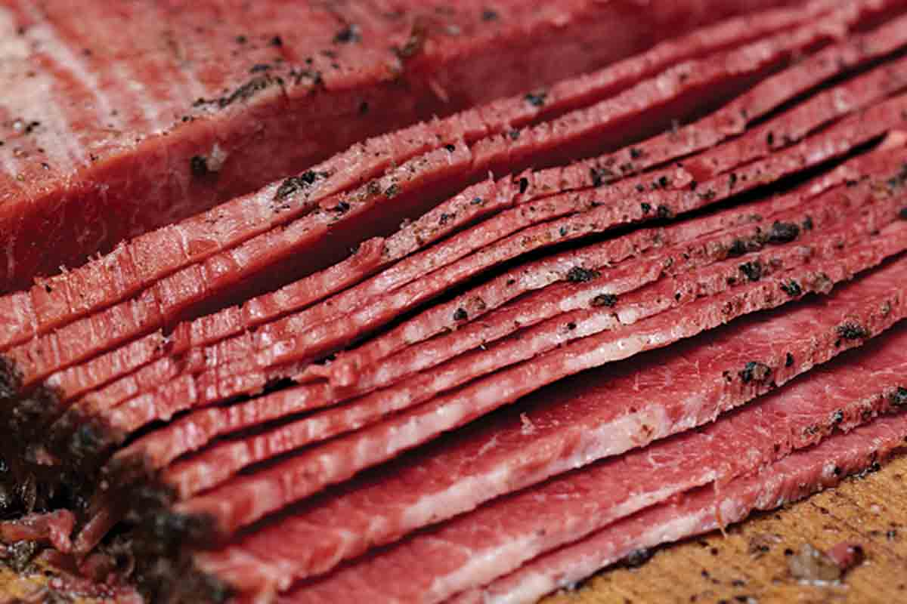

Pastrami

A simple, delicious and affordable way to prepare silverside.
Make lots of this for your sandwiches or to serve with pickles and mustard.
Ingredients
- 3 lb uncorned silverside beef
- 1/2 cup coarse salt
- 2 tbsp black peppercorns
- 1 tbsp coriander seeds
- 4 cloves garlic, minced
- 2 tbsp paprika
- 2 tsp mustard seeds
- 1 tsp ground allspice
Procedure
- Mix the salt, peppercorns, coriander seeds, and garlic in a bowl.
- Rub the mixture all over the uncorned silverside, making sure it is evenly coated.
- Wrap the beef tightly in plastic wrap and place it in a shallow dish.
- Refrigerate for 5 to 7 days, turning the beef over every 24 hours.
- After 5 to 7 days, rinse the beef under cold water and pat it dry.
- Mix the paprika, mustard seeds, and allspice in a bowl.
- Place the beef in a roasting pan and brush it with the mixture.
- Preheat the oven to 150 °C.
- Roast the beef for 2 1/2 to 3 hours, or until it reaches an internal temperature of 75 °C.
- Let the pastrami cool completely, then slice it thinly and serve. Enjoy!